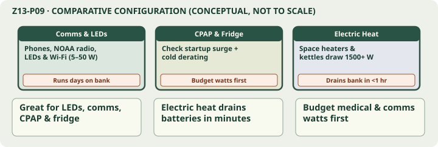

Z13-P09 · Home survival and utilities · New manuscript
Size portable battery power stations realistically for household loads
Match portable indoor-safe battery stations to realistic low-draw essentials rather than overloading inverters with heating loads.
When it applies · Apartments, homes, and cabins using rechargeable lithium portable power stations or UPS battery backups indoors.
Equipment · UL/NRTL-listed portable battery station, appliance wattage labels, and written load budget.

Actions
- Check both continuous wattage AND startup surge wattage on every device label before plugging in—portable battery stations work cleanly indoors with zero exhaust for phones, LED lights, NOAA radios, CPAP machines, Wi-Fi routers, and intermittent modern refrigerators.[U09, U01]
- Recognize that electric resistance heat loads (space heaters, hair dryers, toasters, electric kettles, hardwired furnace blowers) draw 1,000 to 1,800+ watts and drain even large battery stations in under an hour—do NOT count on small battery banks for home heating.[U09]
- Estimate realistic runtime conservatively (accounting for inverter efficiency losses and cold-room temperature derating) and prioritize medical devices, lights, and communications first.[U09, T10]
Failure recognition · Plugging a 1,500-watt electric space heater into a 1,000-Wh battery station during a blizzard and exhausting all medical/phone power in 35 minutes.[U09, T10]
Verify · Confirm listed battery wattage exceeds appliance startup surge and priority medical/comms hours are budgeted separately from convenience loads.[U09, ED]
Stop or change course · Tripped overload protection, hot power cords, or battery depletion toward medical reserve limits requires unplugging non-essential loads immediately.[U09, T10]
Evidence and editorial notes
- T10 · FEMA / Ready.gov · People with Disabilities (current web edition)
- Section: People with Disabilities > Make a Plan and Build a Kit · Conditions: Individuals with mobility, sensory, medical, or power-dependent access and functional needs
Support: Build a personal support network, plan accessible evacuation transport, register voluntarily with local emergency registries where available, and plan backup power and spare supplies for medical devices, medications, and service animals.
Limitations: Local registry availability and utility priority-restoration policies vary by jurisdiction. · Conflicting evidence: None; extends generic preparedness plans to accessible requirements.
Editorial note: Directly addresses Z01 accessible emergency planning requirement. · Specialist reviewer: Accessible emergency management and disability preparedness
Primary source · checked 2026-11-24 - U01 · FEMA / Ready.gov · Power Outages (current web edition)
- Section: Power Outages > Preparing and Responding Safely · Conditions: Residential utility electrical outages of hours to days
Support: Keep phones/medical batteries charged, maintain flashlights instead of candles, unplug sensitive appliances to protect against restoration surges, and verify backup power plans for electrically dependent medical devices.
Limitations: Home outage durations vary widely by grid damage; extended winter outages require heat/evacuation contingencies. · Conflicting evidence: None; aligns with CPSC and NFPA.
Editorial note: Establishes household outage baseline and medical-power priority in Z13. · Specialist reviewer: Emergency management and electrical safety
Primary source · checked 2026-11-24 - U09 · FEMA / Ready.gov · Power Outages (current web edition)
- Section: Battery Backup, Power Stations, and Lithium-Ion Safety · Conditions: Portable battery power stations, UPS units, and rechargeable packs during outages
Support: Use UL/NRTL-listed battery stations within rated wattage limits, charge and store lithium batteries away from combustible bedding/exits, stop using swollen or overheated packs, and account for cold-weather battery capacity loss.
Limitations: Portable battery banks cannot safely power high-draw electric resistance heaters or hardwired furnaces without approved transfer equipment. · Conflicting evidence: None; separates clean indoor battery backup from fuel-combustion hazards.
Editorial note: Grounds portable power sizing, inverter limits, and battery fire safety. · Specialist reviewer: Electrical safety and fire prevention
Primary source · checked 2026-11-24
Source lineage · FEMA Ready.gov Power Outages; new manuscript · Classification · New manuscript.